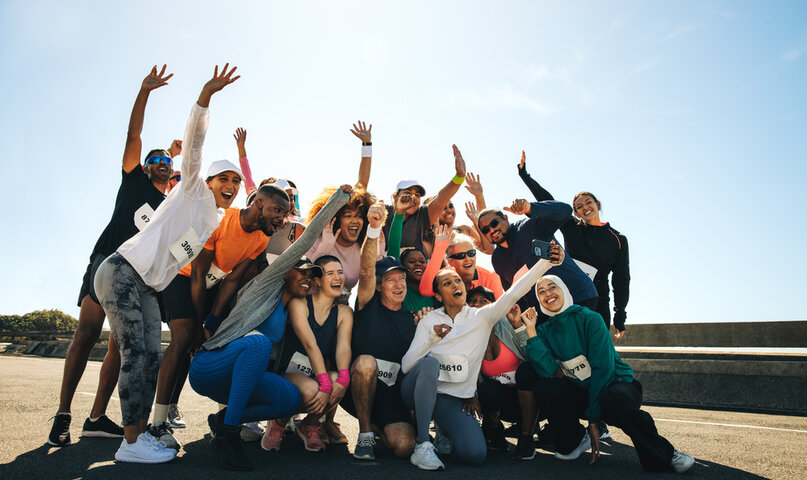
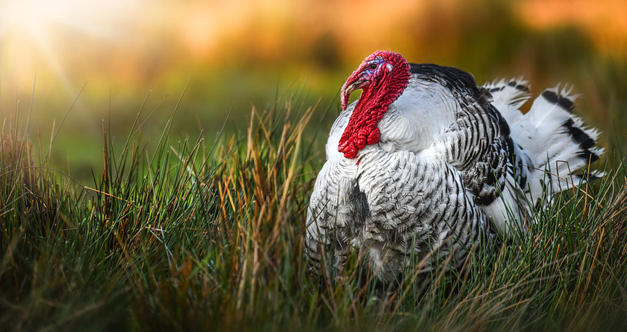
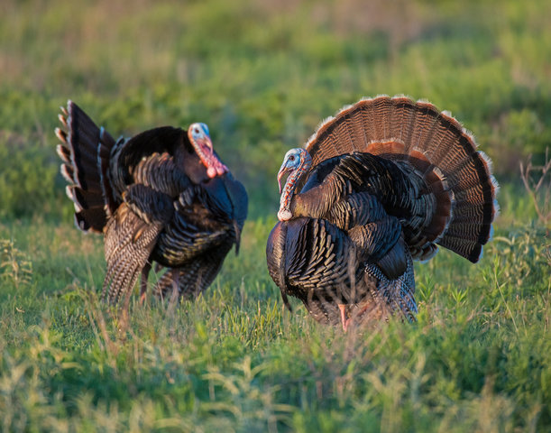

Who Are We?
At the Turkey Jerky Club, we are a mosaic of diverse individuals—ranging from corporate accountants to interpretive dancers—united by a singular, rhythmic pulse: the chew of high-quality dehydrated poultry. We don't just like turkey jerky; we live, breathe, and occasionally dream in hickory-smoke.
Our weekends aren't spent "relaxing" in the traditional sense. Instead, we gather in a high-stakes arena of spice rubs and airflow management, sampling each other's latest creations in a quest for the ultimate snap.

The Source
We believe a happy bird makes for a hardy snack. That's why all our turkeys are sourced from a secretive, organic farm nestled deep within the Ozark wilderness. On this avian utopia, our turkeys live lives of quiet dignity and luxury, enjoying:
- Daily motivational seminars.
- Spacious living quarters with scenic mountain views.
- A humane transition from "proud bird" to "savory strip."
We aren't just a club; we are a flock. And in this flock, the only thing we take seriously is the salt-to-pepper ratio.

